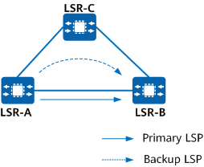
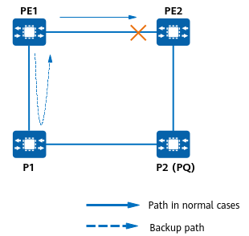
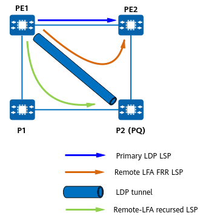

LDP auto fast reroute (FRR) backs up local interfaces to provide the fast reroute function on an MPLS network.
Context
On an MPLS network with both primary and backup links, if the primary link fails, IGP routes re-converge to the backup link, and then the LDP LSP is switched to the backup link. As this process leads to a small amount of traffic loss, LDP Auto FRR can be introduced to minimize this.
On the network enabled with LDP Auto FRR, if an interface failure (detected by the interface itself or by an associated BFD session) or a primary LSP failure (detected by an associated BFD session) occurs, LDP Auto FRR rapidly forwards traffic to a backup LSP, protecting traffic on the primary LSP and minimizing the traffic interruption time.
Implementation
LDP LFA FRR
LDP LFA FRR is implemented based on IGP LFA FRR's LDP Auto FRR. LDP LFA FRR uses the liberal label retention mode to obtain a liberal label, applies for a forwarding entry associated with the label, and forwards the forwarding entry to the forwarding plane as a backup forwarding entry to be used by the primary LSP. If an interface failure (detected by the interface itself or by an associated BFD session) or a primary LSP failure (detected by an associated BFD session) occurs, LDP LFA FRR rapidly forwards traffic to a backup LSP, thereby minimizing the traffic interruption time.
Figure 1 Typical application scenario of LDP Auto FRR - triangle topology
If a backup route corresponding to the source of the liberal label for LDP auto FRR exists and the route's destination meets the policy for LDP to create a backup LSP, LSR-A can apply a forwarding entry for the liberal label, establish a backup LSP, and send the entries mapped to both the primary and backup LSPs to the forwarding plane. In this way, the primary LSP is associated with the backup LSP.
LDP Auto FRR is triggered when the interface detects faults by itself, BFD detects faults in the interface, or BFD detects a primary LSP failure. After LSP FRR is complete, traffic is switched to the backup LSP based on the backup forwarding entry. The route is then converged from the path LSR-A -> LSR-B to the path LSR-A -> LSR-C -> LSR-B. A new LSP is established on the original backup path, and the original primary LSP is torn down. Traffic is then forwarded along the new LSP on the path LSR-A -> LSR-C -> LSR-B.
LDP Remote LFA FRR
LDP LFA FRR cannot calculate backup paths on some large-scale networks, especially on ring networks, which fails to meet reliability requirements. As shown in
Figure 2, on a common ring network, traffic from PE1 to PE2 is transmitted along the shortest path PE1 -> PE2 with the smallest cost. If a fault occurs on the link between PE1 and PE2, PE1 first detects the fault and forwards traffic to P1. P1 is expected to forward traffic to P2 and finally to PE2. However, P1 does not detect the fault immediately after the fault occurs. After the traffic forwarded by PE1 reaches P1, P1 sends the traffic back to PE1 as the path to PE1 has the smallest cost. In this case, a routing loop occurs between PE1 and P1. A large number of loop packets are transmitted on the link between PE1 and P1. As a result, some normal packets from PE1 to P1 may be discarded due to congestion.
Figure 2 Typical LDP Auto FRR application scenario - ring topology (1)
To address this issue, LDP Remote LFA FRR can be used. Remote LFA FRR is implemented based on LDP Auto FRR of IGP remote LFA FRR.
Figure 3 illustrates the typical LDP Auto FRR application scenario. The primary LDP LSP is established over the path PE1 -> PE2. Remote LFA FRR establishes a remote LFA FRR LSP over the path PE1 -> P2 -> PE2 to protect the primary LDP LSP. The detailed implementation process is as follows:
Figure 3 Typical LDP Auto FRR application scenario - ring topology (2)
- An IGP uses the remote LFA algorithm to calculate a remote LFA route with the PQ node (P2) IP address and the recursed outbound interface's next hop and then notifies the route management module of the information.
- LDP obtains the remote LFA route from the route management module. PE1 automatically establishes a remote LDP peer relationship with the PQ node and a remote LDP session for the relationship. PE1 then establishes an LDP LSP to the PQ node and a remote LFA FRR LSP over the path PE1 -> P2 -> PE2.
- LDP-enabled PE1 establishes an LDP LSP over the path PE1 -> P1 -> P2 based on the recursed outbound interface's next hop. This LSP is called a remote LFA FRR recursed LSP.
If PE1 detects a fault, PE1 rapidly switches traffic to the remote LFA FRR LSP.